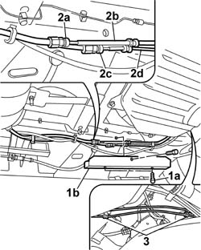
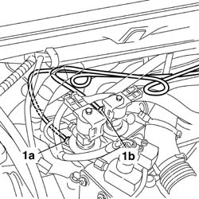
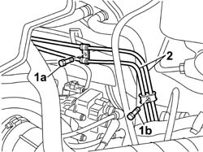

1043B16 RIGID DELIVERY AND RETURN PIPE FROM INTERMEDIATE FITTING TO SOLENOID VALVE - R.R.
- Path
- Procedures > 10 ENGINE UNIT > 1043 GPL TANK AND PIPES > 1043B GPL FUEL CIRCUIT PIPES > 1043B16 RIGID DELIVERY AND RETURN PIPE FROM INTERMEDIATE FITTING TO SOLENOID VALVE - R.R.
- Kind
- repair procedure (removal / refitting; the operation number is the code)
- Applies to
- engines: 2.0 16V; all production periods
- Interactive page
- https://sloeber94.github.io/elrnDB-fDct/en/#/244002660
Applies to: engines: 2.0 16V; all production periods
 Removing
Removing
 Refitting
RefittingDrain the LPG supply and return pipes from the tank to the solenoid valves / G4-G5 in the engine compartment following the instructions in the procedure:
Op. 1043A02 LPG SYSTEM LINES PIPE DRAINING OPERATIONS
Return the vehicle to the workshop and place on a lift.
Disconnect the negative battery terminal.
Raise the vehicle.
1. Undo the bolts (1a) and remove the LPG supply and return pipes guard (1b).
2. Disconnect the intermediate connector (2a) for the supply pipe (2b) and the intermediate connector (2c) for the return pipe (2d).
3. Undo the bolts fixing the retaining bands for the supply and return pipes to the bodyshell.

Applies to: engines: 2.0 16V; all production periods
Lower the vehicle.
1. Disconnect the connector (1a) for the supply pipe on the solenoid valve and the connector (1b) for the return pipe on the solenoid valve.

Applies to: engines: 2.0 16V; all production periods
1. Undo the bolt (1a) and the bolt (1b) fixing the retaining bands for the pipes to the engine - passenger compartment bulkhead.
2. Release the pipes from the retaining bands then extract them from the engine compartment.

Applies to: engines: 2.0 16V; all production periods
Refitting
RemovingPosition the LPG supply and return pipes in the vehicle, avoiding bending them.
Fasten the pipes to the bulkhead between the engine and passenger compartments using the retaining bands.
Connect the LPG supply and return pipes to the solenoid valves and tighten to torque.
Value daNm | Fastening | Component | Ø | |
|---|---|---|---|---|
- | 1.5 | Connector | on the solenoid valve | M10 X 1 |
Raise the vehicle.
Fasten the pipes to the bodyshell using the retaining bands.
Connect the intermediate connector for the LPG supply pipe and the intermediate connector for the LPG return pipe.
Value daNm | Fastening | Component | Ø | |
|---|---|---|---|---|
- | 1.5 | Connector | - | M10 X 1 |
Lower the vehicle.
Op. 1043A04 GPL SYSTEM AND PIPES CHECK FOR LEAKS
Position the LPG supply and return pipes guard.
Connect the negative battery terminal.
Remove the vehicle from the lift.